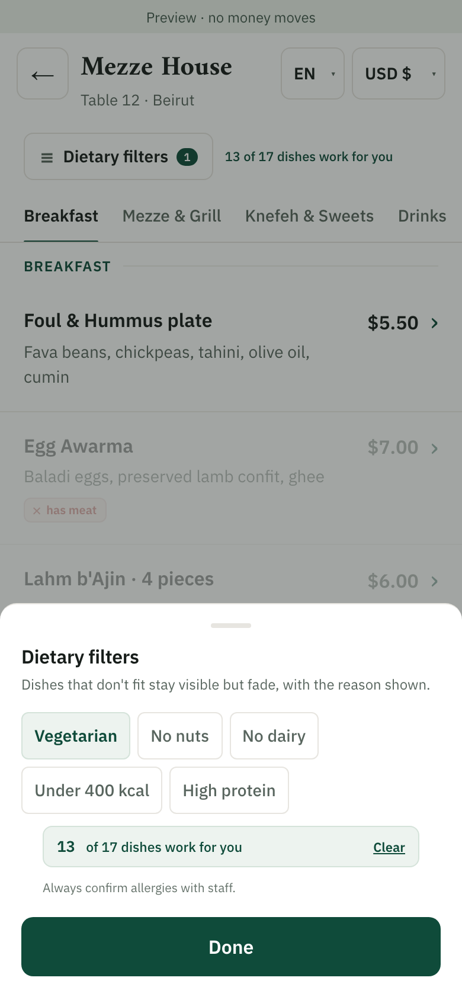
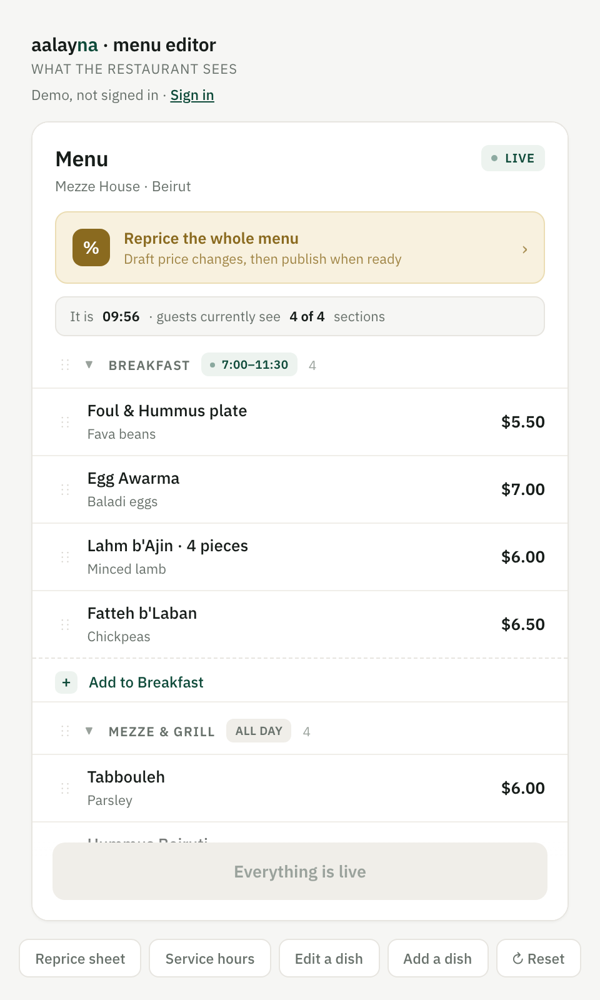

امسح وتصفّح
افتح قائمة المطعم من رمز QR على الطاولة. اختر لغتك واعرض الأسعار بالدولار أو بالليرة.
للمطاعم في لبنان
يطّلع ضيوفك على الفاتورة ويقسّمونها ويدفعونها من الطاولة: رمز QR واحد، بلغتهم، بالدولار أو بالليرة.
العربية · English · Français
مصمَّم لـ Whish والبطاقة والنقد
شهران مجاناً من يوم التشغيل. لا تكمل إلا إذا نجح الأمر في مطعمك.
من أول مسح حتى آخر دفعة
افتح قائمة المطعم من رمز QR على الطاولة. اختر لغتك واعرض الأسعار بالدولار أو بالليرة.

اطّلع على الفاتورة. ادفع عن الطاولة كلها، أو قسّم بالتساوي، أو اختر أطباقك، أو حدّد مبلغاً.

استخدم وسيلة دفع رقمية مدعومة، أو اطلب تحصيلاً نقدياً مع تحديد الباقي المطلوب. يؤكّد الموظفون استلام النقد عند تحصيله.
ما الذي يتغيّر، بالأرقام
13 دقيقة
افتراض افتراضات الحاسبة: 20 دقيقة اليوم، و4 دقائق للتسوية عبر الهاتف، ورحلة الباقي نفسها (3 دقائق) في الحالتين.
حتى 13 دقيقة تُكسَب لكل طاولة (مثال توضيحي): لا انتظار للفت انتباه النادل، ولا للفاتورة المطبوعة، ولا لرحلته إلى الصندوق. وفي ليلة فيها طابور انتظار، يعني ذلك جلوس المجموعة التالية أبكر.
10%
المنتج الإكرامية المحدّدة مسبقاً عند الدفع. تفترض الحاسبة أن 75% من الطاولات تترك إكرامية، بمعدّل 9%.
اقتراح إكرامية لحظة الدفع، 10% محدّدة مسبقاً، بثلاث نقرات. الطاولات التي لم تكن تترك إكرامية تبدأ بذلك، والتي كانت تتركها تزيدها.
نقرة واحدة
المنتج لتقييم الزيارة بعد الدفع. تفترض الحاسبة أن 4% من فواتير Aalayna تؤدّي إلى مراجعة على Google.
نقرة واحدة للتقييم بعد الدفع. الضيوف الراضون يذهبون مباشرة إلى صفحتك على Google، وغير الراضين يرسلون إليك ملاحظة خاصة بدلاً من ذلك.
قائمتك
المنتج بيانات تواصل يختار الضيوف تركها. تفترض الحاسبة أن 20% يتركونها، وأن نصف الجدد يوافقون على تلقّي العروض.
رقم أو بريد إلكتروني يُترك عند الإيصال، مع إذن منفصل لتلقّي العروض، يصبح قائمة تملكها، مرتبطة بما أنفقه كل ضيف وبآخر زيارة له.
أرقام الحاسبة إمّا ما تُدخله أنت وإمّا افتراضاتنا، وكل افتراض موسوم. وتستبدل التجربة الممتدّة شهرين كل افتراض ببياناتك الفعلية.
طرفا الطاولة
يتصفّح الضيوف الأطباق ويستكشفون الخيارات ويختارون طريقة التقسيم. ويتيح محرّر القائمة لفريقك تحديث الأطباق والأسعار وساعات الخدمة قبل النشر.
بعد الدفع، يمكن للضيوف تقييم زيارتهم واختيار مراجعة علنية أو ملاحظة خاصة في خطوة واحدة بسيطة. وتبقى الملاحظات اختيارية.


ابدأ من صالتك
أولاً، نتحقّق من توافق نظام نقاط البيع (POS) ومزوّد الدفع لديك. وبعد تشغيل مطعمك، نشغّل Aalayna مع فريقك لمدة شهرين دون رسوم اشتراك. ونراجع الاستخدام والنتائج معاً قبل أن تقرّر ما إذا كنت ستكمل.
يبدأ الشهران المجانيان من يوم التشغيل، بعد جهوزية إعدادات POS والدفع. لا تجديد مدفوع تلقائي: أنت تقرّر ما إذا كنت ستكمل.
بعد شهرَيك المجانيَّين
$150 / شهرياً / للفرع
أول 10 مطاعم مؤسِّسة تثبّت سعر $100 شهرياً للفرع.
لا عمولة لـ Aalayna على مبيعات المطعم. الإرسال عبر واتساب والبريد الإلكتروني قادم قريباً، وستُؤكَّد رسوم مزوّد الرسائل قبل التفعيل. وقد تنطبق رسوم مزوّد الدفع بشكل منفصل. ويُتّفق على عمليات الربط المدعومة وأي تكاليف إعداد إضافية قبل التجربة.
راسلنا على واتسابقريباً
الزيارة الجيدة قد تكون بداية علاقة دائمة. امنح الضيوف طريقة اختيارية للبقاء على تواصل، وافهم زياراتهم المسجّلة، وحضّر لهم دعوة مناسبة للعودة.
يمكن للضيوف ترك بريد إلكتروني أو رقم واتساب بعد تأكيد الدفع. والإذن بتلقّي العروض منفصل عن الإيصال، ويبقى دائماً اختيارياً.
اربط الزبائن المشتركين بالفواتير المؤكَّدة. وتعرّف على الضيوف الجدد، والزبائن الدائمين، ومن لم يزرك منذ مدة.
حضّر دعوة لمجموعة محدّدة، وراجِع الجمهور، وتابِع زيارات العودة المسجّلة. ويبقى فريقك متحكّماً بكل حملة.
سجل الزبائن وتخطيط الحملات متاحان في النموذج الأولي. الإرسال عبر واتساب والبريد الإلكتروني قادم قريباً. لا تُرسَل أي رسائل اليوم.
قبل أن تبدأ
أخبرنا باسم نظام POS لديك وإصداره. نحتاج إلى التحقّق من الوصول إلى فواتيرك المباشرة ومن كيفية عودة المدفوعات المؤكَّدة إلى سجلاتك. يبقى نظام POS المرجع الرسمي لسجلاتك، ونؤكّد التوافق قبل الاتفاق على أي تجربة.
يمكنه طلب تحصيل نقدي وإبلاغ الصالة بالورقة التي سيدفعها. يبقى الطلب معلّقاً إلى أن يؤكّد الموظفون التحصيل. ويمكن للضيوف أيضاً طلب المساعدة من النادل كالمعتاد.
لا حاجة إلى تنزيل تطبيق Aalayna أو إنشاء حساب لتصفّح القائمة أو استخدام تجربة الضيف. قد يتطلّب الدفع بمحفظة إلكترونية تطبيق مزوّدها وحساباً لديه. والتسجيل للإيصال وللعروض التسويقية اختياري ومنفصل.
يعتمد الإعداد المقصود على حسابات التاجر المدعومة الخاصة بالمطعم نفسه. ويتوقّف توقيت التسوية ورسوم المعالجة على المزوّد والاتفاق معه. يدير المطعم توزيع الإكراميات وفق سياسته الخاصة، ويسجّل Aalayna لمن تعود كل إكرامية وإقرارات صرفها.
النقد، نعم: يطلب الضيف الدفع نقداً من الطاولة، ولا تُحتسب الدفعة إلا بعد أن يؤكّد أحد الموظفين استلامها. البطاقة وWhish غير مفعّلتين بعد، إذ يلزم أولاً ربط مزوّد الدفع لديك، ونحن نتولّى إعداده واختباره معك قبل أن يتمكّن أي ضيف من الدفع بهذه الطريقة.
تبدأ تجربتك عند تشغيل مطعمك، بعد جهوزية إعدادات POS والدفع. لا رسوم اشتراك في Aalayna لمدة شهرين، ولا تجديد مدفوع تلقائي. وإذا اخترت الاستمرار، فالسعر $150 شهرياً للفرع، أو $100 شهرياً للفرع لأول عشرة مطاعم مؤسِّسة. رسوم مزوّد الدفع منفصلة، ويُتّفق مسبقاً على أي تكاليف لإعداد الربط وعلى رسوم الرسائل المستقبلية.
الاشتراك لكل فرع، ويشمل ميزات البرنامج المذكورة وإعداد القائمة وتدريب الموظفين. تحصل أول عشرة مطاعم مؤسِّسة على سعر $100 شهرياً، والسعر العادي $150. رسوم مزوّد الدفع منفصلة، ونتّفق مسبقاً على نطاق الربط وأي تكاليف إعداد إضافية.
قائمة طعامك، وعدد الطاولات، وتفاصيل نظام POS، وإعداد حساب التاجر المدعوم. يراجع مطبخك معلومات المكوّنات والأنظمة الغذائية قبل ظهورها للضيوف. ونرتّب تدريب الموظفين بما يناسب ساعات الخدمة لديك.
هذا هو هدف أدوات الاحتفاظ بالزبائن: جمع بيانات تواصل اختيارية مع إذن تسويقي منفصل، وربطها بالزيارات المؤكَّدة، وتحضير دعوات مناسبة. يدعم النموذج الأولي سجل الزبائن وتخطيط الجمهور وتسجيل زيارات العودة. والإرسال عبر واتساب والبريد الإلكتروني قادم قريباً. لا نعِد بإيرادات إضافية؛ وبعد ربط خدمة الرسائل، يمكننا قياس التسليم والزيارات اللاحقة مع فريقك مع مرور الوقت.
لا. الدفع وترك مراجعة لا يتطلّبان بريداً إلكترونياً أو رقم هاتف. ويمكن للضيوف طلب إيصال دون الموافقة على عروض المطعم. تشمل معلومات الزيارات الدافعين المعروفين المرتبطين بفواتير، لا كل من يجلس إلى الطاولة.
يمكن للضيوف العودة إلى طريقة الدفع المعتادة بمساعدة الموظفين. لا تُعتبر الدفعة مؤكَّدة إلا بعد التحقّق منها، وستختبر التجربة آلية البديل والمطابقة مع فريقك.
أهلاً وسهلاً
شاركنا ما يحتاجه فريقك، وسنساعدك في التخطيط للخطوة التالية.